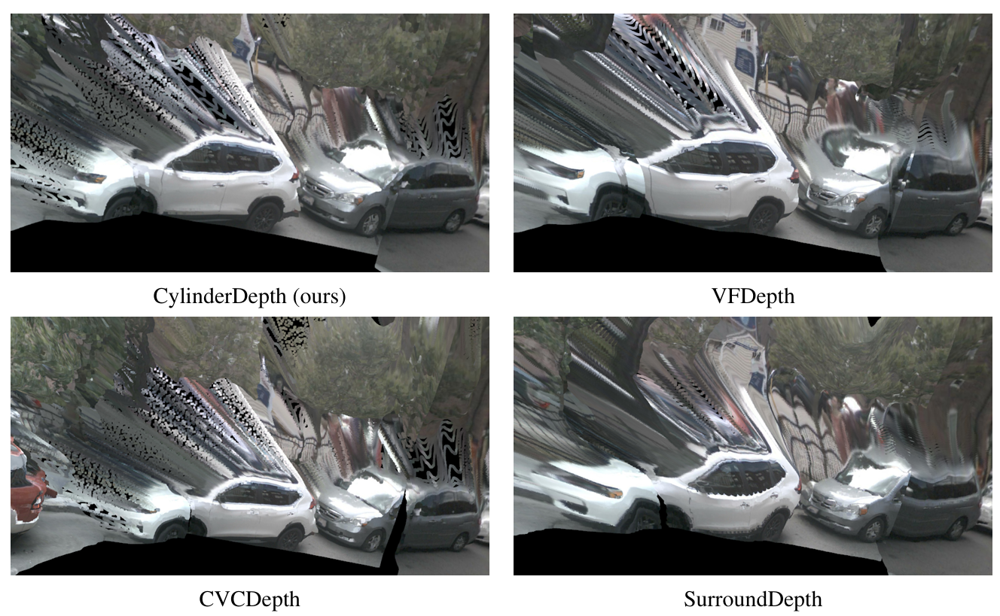
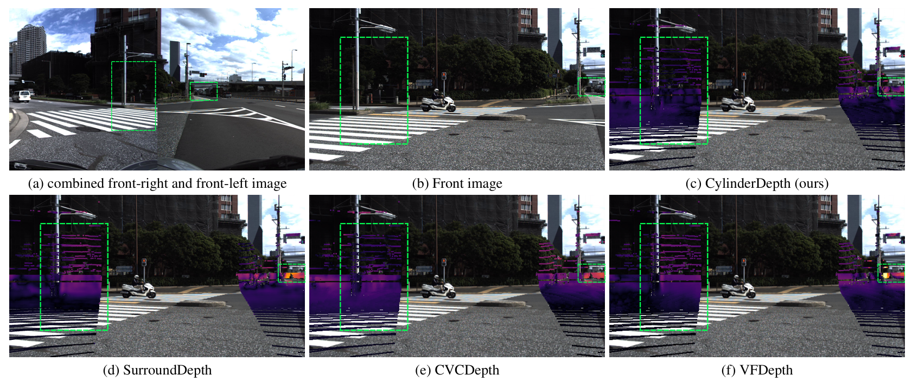
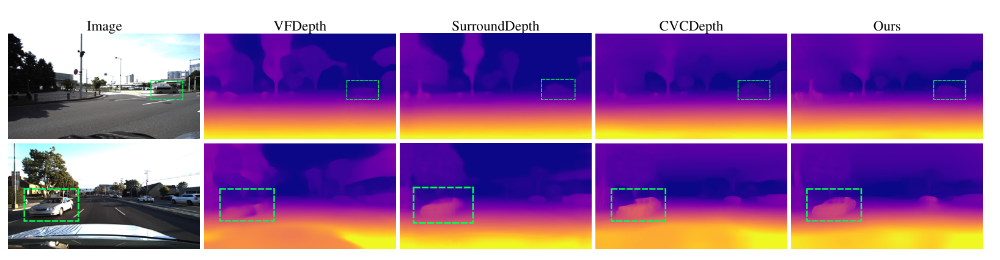

Self-supervised surround-view depth estimation enables dense, low-cost 3D perception with a 360° field of view from multiple minimally overlapping images. Yet, most existing methods suffer from depth estimates that are inconsistent between overlapping images. Addressing this limitation, we propose a novel geometry-guided method for calibrated, time-synchronized multi-camera rigs that predicts dense, metric, and cross-view-consistent depth. Given the intrinsic and relative orientation parameters, a first depth map is predicted per image and the so-derived 3D points from all images are projected onto a shared unit cylinder, establishing neighborhood relations across different images. This produces a 2D position map for every image, where each pixel is assigned its projected position on the cylinder. Based on these position maps, we apply an explicit, non-learned spatial attention that aggregates features among pixels across images according to their distances on the cylinder, to predict a final depth map per image. Evaluated on the DDAD and nuScenes datasets, our approach improves the consistency of depth estimates across images and the overall depth compared to state-of-the-art methods.

Exemplary 3D reconstructions, comparing our method to the state-of-the-art on nuScenes. It shows the reconstruction of the overlap regions of the front-right, back-right and the back camera.

Exemplary consistency error maps, computed using the metric described in Sec. 4.1 overlayed on the front-image, comparing our approach with state-of-the-art methods on DDAD. Our method maps overlapping regions from the two images to nearby 3D coordinates. In contrast, the other methods exhibit a higher inconsistency in these regions (green bounding boxes). (a) shows the combined relevant regions from the front-right and front-left images that overlap with the front image. Errors are visualized using the inferno colormap, ranging from black (low error) to yellow (high error).

Comparison of depth maps predicted by our method and by state-of-the-art methods on DDAD. Our results show better preserved details and well-defined object boundaries (green bounding boxes).
@article{abualhanud2025cylinderdepth,
title={CylinderDepth: Cylindrical Spatial Attention for Multi-View Consistent Self-Supervised Surround Depth Estimation},
author={Abualhanud, Samer and Grannemann, Christian and Mehltretter, Max},
journal={arXiv preprint arXiv:2511.16428},
year={2025}
}